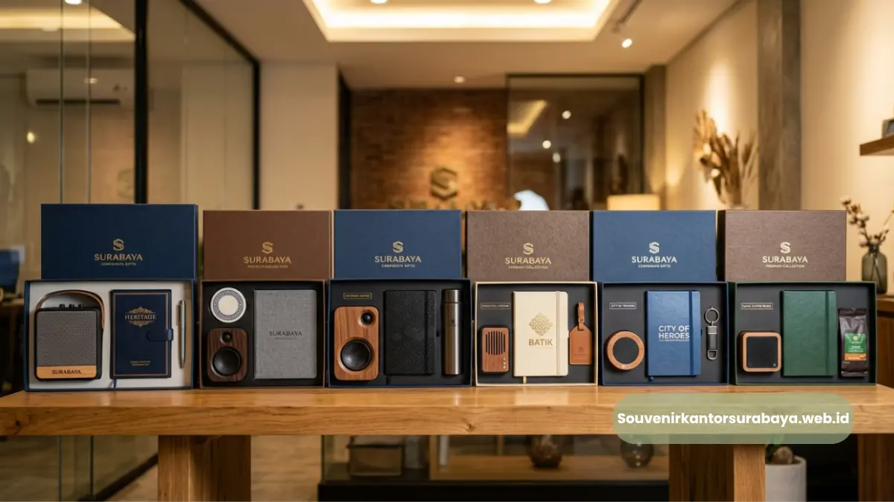
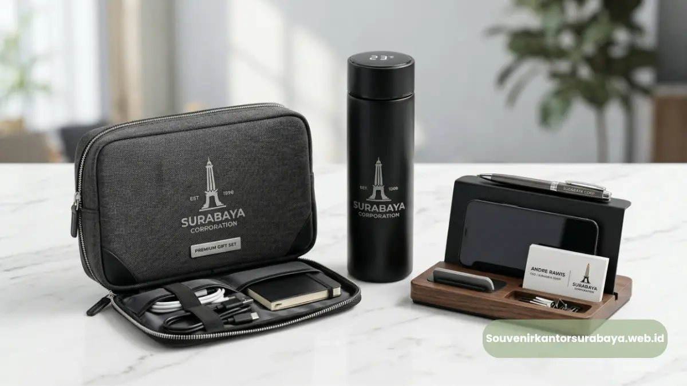
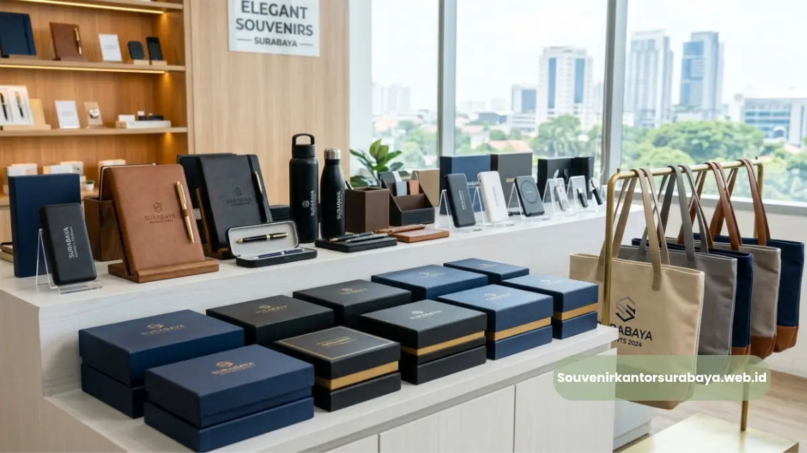
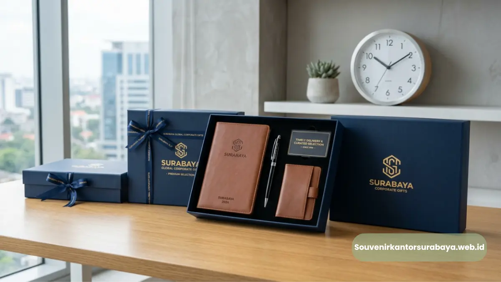
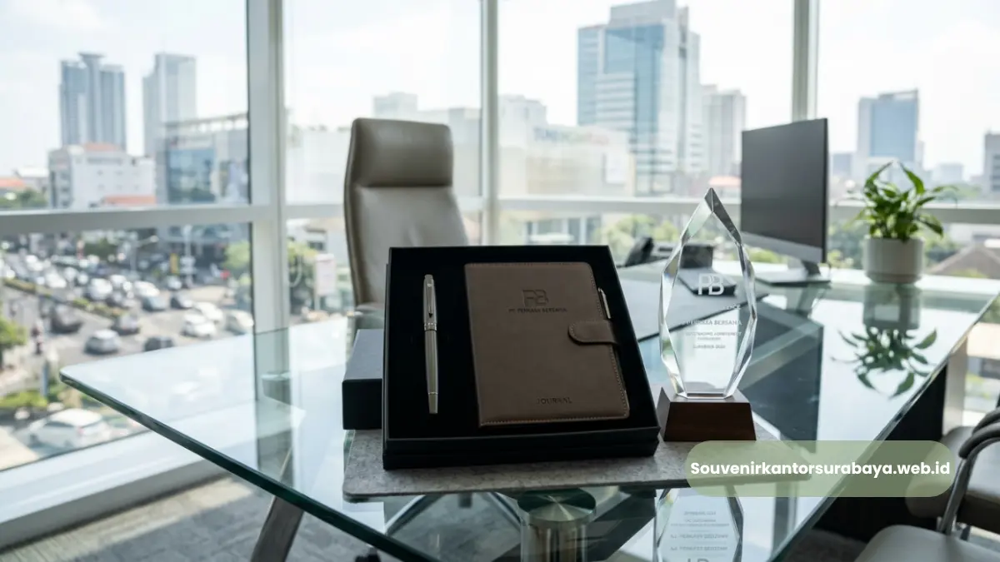

Ciri souvenir acara kantor yang berkesan adalah fungsional dalam penggunaan sehari-hari, memiliki kualitas material yang baik, dan menampilkan identitas perusahaan secara konsisten melalui desain dan logo.
Ciri souvenir acara kantor yang berkesan adalah fungsional dalam penggunaan sehari-hari, memiliki kualitas material yang baik, dan menampilkan identitas perusahaan secara konsisten melalui desain dan logo. Kombinasi ketiga aspek ini membuat souvenir lebih bernilai di mata penerima.
- Souvenir yang fungsional cenderung lebih sering digunakan dan diingat penerima
- Kualitas material menentukan daya tahan dan kesan profesional souvenir
- Desain yang konsisten dengan identitas visual memperkuat citra perusahaan
- Kemasan yang rapi menambah nilai presentasi saat souvenir diserahkan
Apa yang Membuat Souvenir Acara Kantor Berkesan bagi Penerima?
Souvenir acara kantor berkesan bagi penerima adalah souvenir yang memiliki nilai guna nyata dalam aktivitas sehari-hari, bukan sekadar barang seremonial yang berakhir tanpa digunakan. Nilai fungsional menjadi faktor utama yang menentukan seberapa lama souvenir tersebut diingat.
Produk seperti notebook, tumbler, atau tas kerja umumnya lebih berkesan dibanding souvenir dekoratif yang tidak memiliki fungsi jelas.
Semakin sering souvenir digunakan penerima dalam rutinitas kerja, semakin besar peluang logo dan identitas perusahaan terus terlihat dalam jangka panjang.
Selain fungsi, faktor emosional juga berperan. Souvenir yang diberikan dengan kemasan rapi dan presentasi yang baik cenderung meninggalkan kesan lebih positif dibanding souvenir yang diserahkan begitu saja tanpa sentuhan detail.
Mengapa Kualitas Material Souvenir Acara Kantor Penting?

Kualitas material souvenir acara kantor penting karena memengaruhi daya tahan produk sekaligus mencerminkan citra profesionalisme perusahaan yang memberikannya.
Material yang mudah rusak dapat menimbulkan kesan kurang baik meskipun desainnya menarik.
Beberapa alasan kualitas material perlu diperhatikan secara serius:
- Material yang kokoh membuat souvenir dapat digunakan dalam jangka waktu lebih lama
- Kualitas bahan turut memengaruhi hasil akhir cetakan logo, terutama pada teknik ukir atau embos
- Produk dengan material baik cenderung mempertahankan tampilan tetap rapi meski sering digunakan
- Kesan pertama terhadap kualitas produk dapat memengaruhi persepsi penerima terhadap perusahaan secara keseluruhan
Material yang dipilih dengan cermat menjadi investasi jangka panjang dalam membangun citra perusahaan melalui souvenir korporat.
Bagaimana Desain Souvenir Memperkuat Identitas Perusahaan?
Desain souvenir memperkuat identitas perusahaan ketika elemen visual seperti logo, warna korporat, dan tipografi diterapkan secara konsisten pada seluruh produk yang dibagikan kepada tamu undangan atau klien.
Beberapa elemen desain yang berkontribusi pada penguatan identitas perusahaan:
Konsistensi Warna Korporat
Penggunaan warna yang sama dengan identitas visual perusahaan pada seluruh souvenir membantu menciptakan pengenalan brand yang lebih kuat di mata penerima.
Penempatan Logo yang Proporsional
Logo yang dicetak dengan ukuran dan posisi tepat akan terlihat lebih profesional dibanding logo yang terlalu besar atau ditempatkan tanpa pertimbangan estetika produk.
Teknik Cetak yang Sesuai Material
Setiap material memiliki teknik cetak logo yang paling optimal, misalnya ukir untuk produk kayu atau embos untuk produk berbahan kulit sintetis, sehingga hasil akhir terlihat rapi dan tahan lama.
Baca Juga
Apa Saja Faktor Tambahan yang Meningkatkan Kesan Souvenir Acara Kantor?
Faktor tambahan yang meningkatkan kesan souvenir acara kantor meliputi kemasan presentasi, relevansi produk dengan tema acara, serta ketepatan waktu penyerahan souvenir kepada penerima pada hari acara.
Beberapa faktor pendukung lainnya:
- Kemasan yang rapi dan sesuai tema acara menambah nilai presentasi souvenir
- Relevansi produk dengan jenis acara membuat souvenir terasa lebih personal
- Ketepatan jumlah souvenir sesuai daftar tamu menghindari kekurangan pada hari acara
- Detail kecil seperti kartu ucapan tambahan dapat memberikan sentuhan personal ekstra
Gabungan seluruh faktor ini menjadikan souvenir acara kantor bukan sekadar formalitas, melainkan bagian dari strategi membangun hubungan baik dengan klien maupun karyawan.
Souvenir acara kantor yang berkesan adalah kombinasi antara fungsi praktis, kualitas material yang baik, serta desain yang konsisten dengan identitas perusahaan. Ketiga aspek ini perlu dipertimbangkan bersama agar souvenir memberikan dampak jangka panjang bagi citra perusahaan.

Hawa Nadira
Tim penulis CorporateGifts ID berfokus pada strategi souvenir kantor, merchandise korporat, dan inovasi brand untuk klien B2B.
Keahlian: Branding perusahaan, produksi souvenir, paket event, desain materi promosi.
Artikel Terkait

Cari Souvenir Acara Kantor di Surabaya, Solusi Ada di Sini
Cari souvenir acara kantor di Surabaya yang elegan, sesuai anggaran, dan siap kirim tepat waktu.
Baca Selengkapnya
Kapan Waktu Tepat Cari Souvenir Acara Kantor di Surabaya
Waktu tepat mencari souvenir acara kantor di Surabaya adalah minimal dua hingga empat minggu sebelum hari acara.
Baca Selengkapnya
Souvenir Kantor Surabaya Eksklusif untuk Branding Bisnis
Souvenir kantor Surabaya adalah merchandise korporat yang dipesan khusus untuk klien, mitra, atau karyawan.
Baca Selengkapnya